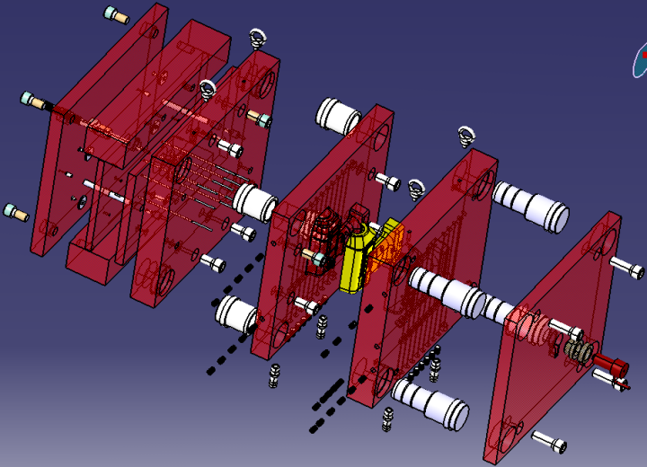
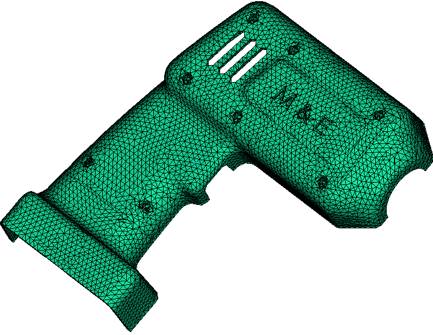
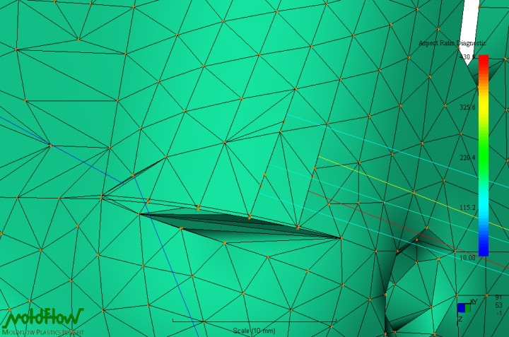
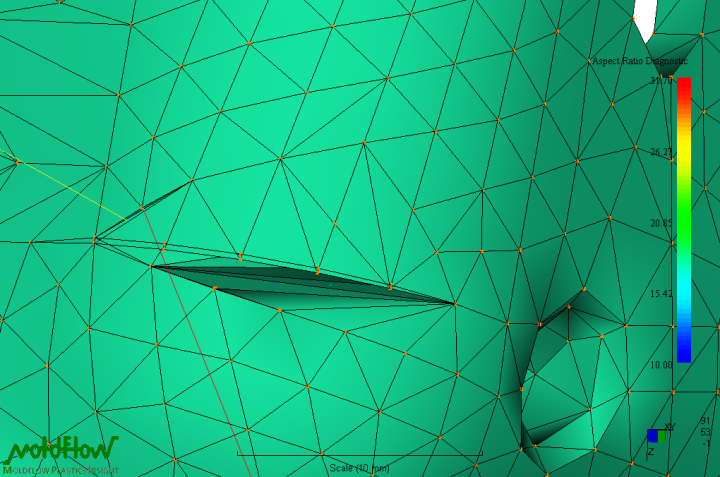
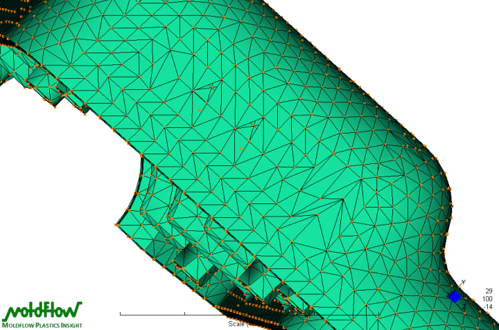
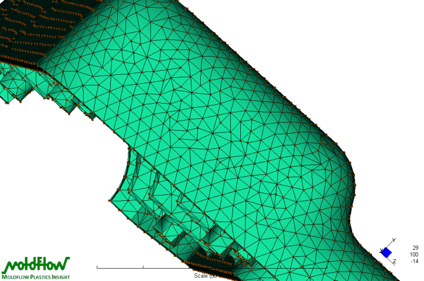

|
4.6 Hazýr Parçalarýn Seçimi ve Yerleþimi
Dassault Systems CATIA V5'te bulunan Mold Tooling Design arayüzü yardýmý ile standart elemanlarý eklemek mümkündür. Ýstenen eleman katalogdan seçilip, yeri için model üzerinde bir noktaya týklanmalýdýr. Standart kalýplarýn üzerinde tavsiye edilen delme noktalarý bulunmaktadýr. Eklenen standart elemanlar ürün aðacýna (product tree) birer component olarak eklenecektir. Üzerlerinde deðiþiklik yapmak için sað týkla object menüsüne girilmelidir. Bunun nedeni þöyle açýklanabilir. Standart eleman seçildiðinde eklenirken gereken delik delme, diþ açma iþlemleri yapýlmaktadýr. Componentin delete component yerine delete komutu ile silinmesi sonucu bu iþlemler kalacaktýr (model üzerinde delik, açýlmýþ diþ gibi). Merkezleme pimleri, burçlar, sabitleme civatalarý, itici milleri, taþýma halkalarý gibi hazýr parçalar eklendikten ve soðuma kanallarý iþlenip, meme eklendikten sonra kalýbýn bitmiþ halinin patlatýlmýþ montaj görünümü Resim 9'dadýr.

Resim
9 - Bitmiþ kalýbýn patlatýlmýþ 3B resmi
Soðutma kanallarý bahsi geçen bölümlerde, tavsiyelere dayanýlarak tasarlanmýþ ve bir sonraki bölümde anlatýlan yöntemle de sýnanmýþtýr.
5 Analiz
CFD (Computational Fluid Dynamics - Hesaplamalý Akýþkanlar Dinamiði) ve FEM (Finite Elements Method - Sonlu Elemanlar Yöntemi) ile analizler, basit formüllerle hesaplanamayan geometrinin, ayný formüllerle hesaplanabilecek geometrilere ayrýklaþtýrýlmasý ile yapýlýrlar. Bu ayrýklaþtýrma yardýmý ile de að örülür (mesh). Yükselen eleman sayýsý ve düzelen eleman formu sonuçlarý gerçeðe yakýnsatacaktýr. Moldflow, Fusion isimli algoritma ile yüzeylere üçgen elemanlar (trias) atayabilmektedir. Fusion yöntemi, genel anlamda 2B yapýsal olmayan bir algoritma ile ürünün üst ve alt yüzeylerini ayrý ayrý ayrýklaþtýrýr, orta düzlem (midplane) meshinden alýnan sonuçlar açýsýndan çok farklý olmayacaktýr. Düzeltmelerin ve 3B tetrahedral elemanlarýn (çarpýlma analizinin gerçekleþmesi için gerekmektedir) oluþturulabilmesi için mesh yöntemi olarak tercih edilmiþtir. Sonucun genel görünümü Resim 10'dadir.

Resim
10 - Oluþturulmuþ mesh yapýsý
5.1 Mesh Düzeltme
Hiçbir algoritma, insan desteði olmadan, en iyi mesh yapýsýný gerçekleþtiremez. Geliþen grafik arayüzleri ile yapýyý görselleþtirmek ve kolayca düzeltmeler yapmak mümkündür. Yapýlan düzeltmelerden ikisi þöyledir.
5.1.1 Aspect Ratio (Basýklýk Oraný) Sorunu
Basýklýk oraný; üçgen elemanýn en uzun kenarýnýn ona ait yüksekliðe oranýdýr. Eþkenar üçgen (oran: 1) ideal eleman formudur. Ýstenen deðerin üzerinde basýklýk oranýna sahip olan elemanlar otomatik olarak iþaretletilebilir. 2B elemanlar için bu oranýn 6 (altý) deðerini geçmemesi tavsiye edilebilir. Aslýnda akýþ yönündeki eleman uzamasýnýn sonuca etkisinin olmadýðý bilinmektedir [3], fakat elemanlarýn iþaretlenmesinde akýþ yönü dikkate alýnmamaktadýr, zaten henüz hesaplama yapýlmadan akýþ yönelimi öngörüsü saðlýklý olmayacaktýr. Sorunlu elemanlara örnek ve node birleþtirmeleri yapýlarak elde edilen bir çözümü Resim 11 ve Resim 12'te görülmektedir. Çok büyük deðerleri iþaret eden elemanlarýn nodelarý bir çizgi üzerinde birleþmiþ gibi görünmektedir. Bunun gibi aþýrý yüksek deðerler yüzey formundan da kaynaklanabilmektedir, bu durum CAD programýndan modelin aktarýlma þeklinden ortaya çýkmaktadýr.

Resim
11 - Basýklýk Oraný sorununa örnek elemanlar

Resim
12 - Düzeltilmiþ Basýklýk Oraný sorunu
5.1.2 Eleman Ýyileþtirme
Bahsedildiði gibi eleman formlarýný iyileþtirmek mümkün, çoðu zaman da gereklidir. Merge Nodes (nodelarý birleþtirmek için), Swap Edges (ortak kenara sahip iki elemanýn bu kenarýný aralarýnda ortak eleman barýndýrmayan iki node arasýna yerleþtirmek için), Insert/Move Nodes (node yerleþimlerini deðiþtirmek için) gibi komutlar aracýlýðý ile iyileþtirilmiþ eleman yerleþimi ve öncesi Resim 13 ve Resim 14'te görülmektedir.

Resim
13 - Atanan Mesh sonucu eleman yerleþimi

Resim
14 - Yapýlan düzeltmeler sonucu eleman yerleþimi
5.2 Mesh Sonuçlarý ve Eleman Dönüþümü
Mesh Statistics ile yapý kontrol edilmiþ ve yeterli deðerlere gelinene dek Fusion mesh yapýsýnýn üzerinde deðiþiklikler ve geliþtirmeler yapýlmýþtýr. Son olarak mesh, 3B elemanlar seçilerek yeniden yapýlmýþtýr. 3B eleman kullanmak çarpýlma analizi için gereklidir.
|